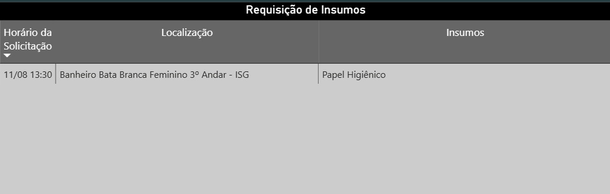
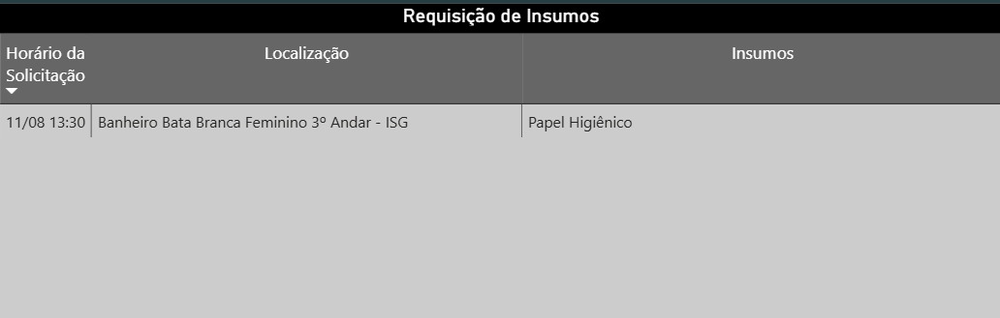
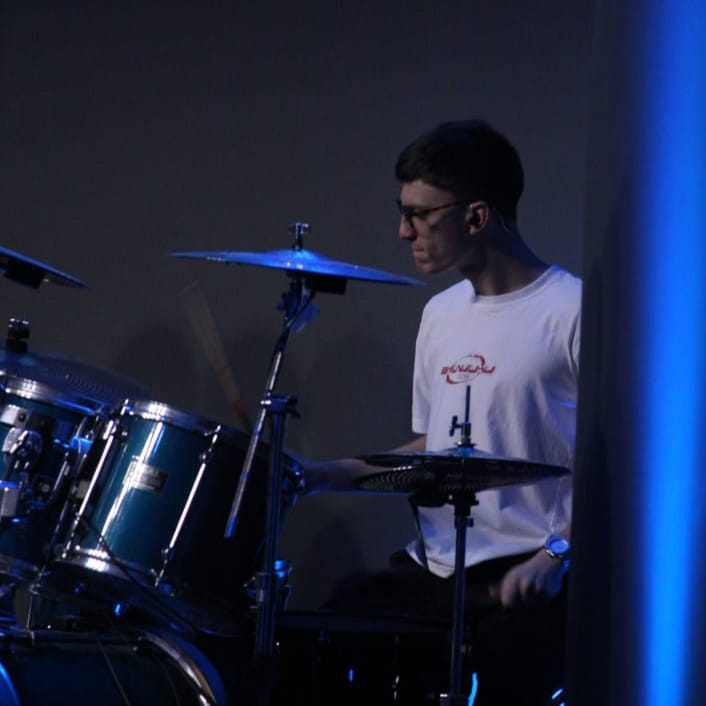
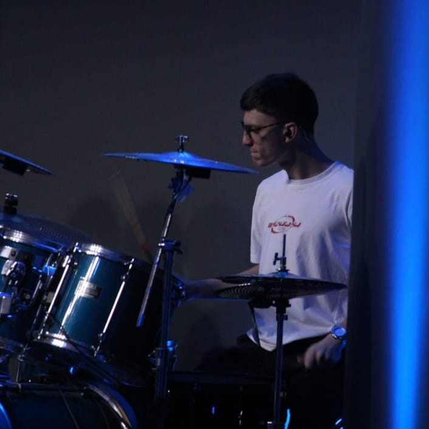

Profissionalmente, na Inova Saúde SA, eu sou responsável por desenvolver documentos, relatórios e painéis a vista utilizando SQL (Oracle) para integrar os dados à ERP MV Hospitalar
Meu principal projeto foi uma automação para a requisição de insumos para os banheiros. Percebi que o atraso dos suprimentos estava afetando os KPIs do hospital. Mesmo não sendo minha tarefa, tomei a iniciativa de automatizar o processo utilizando Power Automate  e Power BI .
e Power BI .
Sou voluntário na minha comunidade de fé, Igreja Cristã Bíblica, há 5 anos. Passei por diversas áreas e setores, mas hoje me encontro na área musical e mídias. Porém minha função principal é como líder da equipe de jovens.
Lidero há 1 ano. Sou responsável pelo planejamento técnico e financeiro de eventos de pequeno a médio porte  e pela ministração de aulas e palestras
e pela ministração de aulas e palestras  . Além do mais, como líder, faço questão de estar presente e atento às necessidades das pessoas que frequentam nosso grupo.
. Além do mais, como líder, faço questão de estar presente e atento às necessidades das pessoas que frequentam nosso grupo.
 
